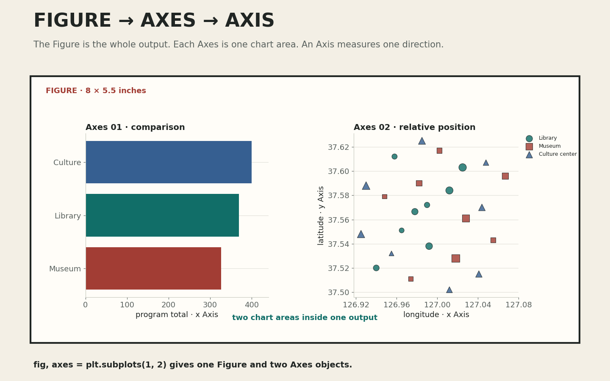

표를 요약하고 두 그래프를 세로형 데이터 포스터로 편집하기
오늘의 학습 목표
- Figure, Axes, Axis의 역할과 이름을 서로 구분할 수 있습니다.
groupby(),sum(),reset_index(),sort_values()가 범주별 합계 표를 만드는 순서를 설명할 수 있습니다.sns.barplot()로 0에서 시작하는 가로 막대그래프를 만들 수 있습니다.- 관계 산점도에서 두 측정값의 관계를 읽되 원인으로 단정하지 않을 수 있습니다.
- 좌표 산점도에서 경도·위도를 위치로, 범주를 색상·표식으로, 프로그램 수를 크기로 표현할 수 있습니다.
- 질문형 제목, 핵심 관찰, 해석의 한계, 데이터 출처가 있는 1600 × 2200 PNG를 저장할 수 있습니다.
- 0-7분Figure와 Axes
전체 출력과 그래프 영역을 구분합니다.
- 7-18분집계와 막대
범주별 합계를 정렬해 가로 막대로 그립니다.
- 18-28분관계 산점도
두 측정값의 관계와 해석 한계를 읽습니다.
- 28-37분좌표 산점도
경도·위도와 세 시각 변수를 연결합니다.
- 37-45분읽기와 접근성
색상·표식·범례·주석을 점검합니다.
- 45-50분포스터와 저장
읽기 위계를 만들고 PNG로 저장합니다.
- 50-60분선택 확장
데이터는 유지하고 시각적 위계만 바꿉니다.
수업 운영: 기본 50분과 확장 60분
기본 50분에는 Figure·Axes, 집계, 가로 막대그래프, 두 종류의 산점도, 읽기 점검, 포스터 저장까지 진행합니다. 코드는 설명을 읽은 뒤 짧은 단위로 실행합니다. 모든 개별 확인이 빠르게 끝난 경우에만 50-60분 확장에서 데이터와 축을 유지한 채 제목과 그래프 크기의 위계를 바꿉니다.
프로그래밍을 몰라도 먼저 붙잡을 문장
Figure는 저장되는 종이 한 장이고, Axes는 그 종이 안에서 실제 그래프를 그리는 영역입니다. 데이터 정리, 그래프 그리기, 설명 쓰기, 파일 저장을 한 번에 하지 않고 순서대로 확인합니다.
0-7분 · Figure, Axes, Axis를 종이와 그래프 영역으로 이해하기
Matplotlib에서 Figure는 제목, 그래프, 범례, 출처를 모두 담는 전체 출력 영역입니다. Axes는 Figure 안에서 데이터를 그리는 하나의 그래프 영역입니다. 하나의 Figure에 Axes가 두 개 있으면 그래프도 두 영역에 나누어 배치할 수 있습니다.
Axis는 Axes 안에서 가로 또는 세로 방향의 눈금과 좌표를 관리합니다. 이름이 비슷하지만 역할은 다릅니다. Figure 1개 안에 Axes 2개가 있고, 각 Axes에는 x Axis와 y Axis가 있다고 생각하면 됩니다.

import matplotlib.pyplot as plt
fig, axes = plt.subplots(
nrows=2,
ncols=1,
figsize=(8, 11),
)
print(type(fig))
print(len(axes))plt.subplots()는 Figure와 Axes를 함께 만듭니다. nrows=2와 ncols=1은 위아래로 놓인 두 영역을 뜻합니다. 반환된 Figure는 fig, 두 Axes는 axes[0]과 axes[1]로 가리킵니다. figsize=(8, 11)의 단위는 픽셀이 아니라 인치입니다.
| 이름 | 쉬운 비유 | 이번 수업의 역할 | 코드에서 가리키는 이름 |
|---|---|---|---|
| Figure | 저장할 종이 한 장 | 포스터 전체와 최종 PNG | fig |
| Axes | 종이 안의 그래프 칸 | 가로 막대 영역과 좌표 산점도 영역 | axes[0], axes[1] |
| Axis | 한 방향의 자와 눈금 | 가로·세로 값, 단위, 눈금 | xaxis, yaxis |
공식 문서에서 확인하기
Matplotlib의 Axes and subplots 공식 문서 ↗는 Axes가 데이터를 시각화하는 중심 영역이며 축 이름, 제목, 범례와 주석을 추가하는 메서드를 가진다고 설명합니다. 이번 수업에서는 전체 구조를 외우기보다 fig와 두 Axes의 관계만 확인합니다.
확인: axes[0]의 0은 그래프의 값인가?
아닙니다. 두 Axes가 목록처럼 묶여 있을 때 첫 번째 영역을 가리키는 인덱스입니다. axes[0]은 위쪽 막대그래프 영역, axes[1]은 아래쪽 좌표 산점도 영역으로 사용합니다.
확인: figsize=(8, 11)이면 이미지가 8 × 11픽셀인가?
아닙니다. figsize는 인치 단위입니다. 저장 해상도가 dpi=200이면 가로 8인치 × 200, 세로 11인치 × 200이 되어 1600 × 2200픽셀이 됩니다.
7-18분 · 행 24개를 범주 세 개의 합계로 요약하기
원본 정제 표의 한 행은 시설 한 곳입니다. 막대그래프의 질문은 시설 24곳을 하나씩 비교하는 것이 아니라 세 범주의 프로그램 수 합계를 비교하는 것입니다. 따라서 먼저 같은 category를 가진 행을 묶고 program_count를 더합니다.
category_summary = (
facility_df
.groupby("category", as_index=False)["program_count"]
.sum()
.sort_values("program_count")
.reset_index(drop=True)
)
print(category_summary)groupby("category")가 같은 범주의 행을 한 묶음으로 봅니다.["program_count"].sum()이 묶음마다 프로그램 수를 더합니다.sort_values("program_count")가 작은 합계부터 큰 합계 순서로 정렬합니다.reset_index(drop=True)가 정렬 뒤의 행 번호를 0부터 다시 붙입니다.
| 정렬 순서 | category | 시설 수 | program_count 합계 |
|---|---|---|---|
| 1 | 박물관 | 8 | 326 |
| 2 | 도서관 | 8 | 369 |
| 3 | 문화센터 | 8 | 400 |
세 범주의 시설 수는 모두 8개이므로 이 표에서는 합계를 바로 비교할 수 있습니다. 실제 데이터에서 범주별 시설 수가 크게 다르면 합계가 큰 이유가 시설 수 때문일 수 있습니다. 그때는 합계와 시설 수를 함께 보여 주거나 시설당 평균이라는 다른 질문을 분리해야 합니다.
category_palette = {
"박물관": "#b94b40",
"도서관": "#177f78",
"문화센터": "#365f91",
}
sns.barplot(
data=category_summary,
x="program_count",
y="category",
hue="category",
palette=category_palette,
errorbar=None,
legend=False,
ax=axes[0],
)
axes[0].set_xlim(left=0)
axes[0].set_xlabel("프로그램 수 합계")
axes[0].set_ylabel("")sns.barplot()은 범주와 수치를 막대로 연결합니다. 이번에는 이미 범주별 합계를 한 행씩 만든 표를 사용하므로 불확실성 막대가 필요하지 않아 errorbar=None으로 둡니다. axes[0].set_xlim(left=0)은 막대 길이의 기준선을 0으로 고정합니다.
확인: groupby()를 실행하면 원본 24행이 사라지는가?
facility_df를 덮어쓰지 않고 결과를 category_summary라는 새 변수에 저장했으므로 원본 24행은 유지됩니다. 집계표 세 행과 시설표 24행은 서로 다른 질문을 위해 함께 사용합니다.
확인: sum()과 count()는 같은 결과를 만드는가?
아닙니다. sum()은 프로그램 수 값을 더해 326, 369, 400을 만듭니다. count()는 값이 있는 시설 행을 세므로 각 범주에서 8이 됩니다. 어떤 계산이 질문에 답하는지 먼저 확인합니다.
오류: KeyError: 'program_count'가 나오면 무엇을 확인하는가?
facility_df.columns.tolist()를 출력해 열 이름의 철자, 대소문자, 앞뒤 공백을 확인합니다. 오류 메시지는 계산식이 틀렸다는 뜻보다 현재 표에 정확히 같은 이름의 열이 없다는 뜻입니다.
18-28분 · 관계 산점도는 두 측정값이 함께 변하는지 살핀다
관계 산점도를 먼저 별도 사례로 연습하는 이유는 11주차 시설 좌표 산점도와 해석을 섞지 않기 위해서입니다. 9주차 창작 활동 기록의 duration_min과 focus_level은 작업 한 번에서 측정한 서로 다른 두 값입니다. 점 하나는 한 번의 활동입니다.
sns.scatterplot(
data=activity_df,
x="duration_min",
y="focus_level",
hue="activity",
)
plt.xlabel("작업 시간(분)")
plt.ylabel("집중도(1~5)")가로축에서 작업 시간이 길어지고 세로축에서 집중도가 높아지는 방향에 점이 모이는지 살필 수 있습니다. 그러나 함께 변하는 패턴은 원인을 증명하지 않습니다. 활동 종류, 장소, 난이도, 기록 방식처럼 두 값에 함께 영향을 준 다른 조건이 있을 수 있습니다.
| 확인할 것 | 설명 문장 | 피할 단정 |
|---|---|---|
| 방향 | 작업 시간이 긴 기록에서 집중도도 높은 경향이 보인다. | 오래 작업하면 반드시 집중도가 높아진다. |
| 퍼짐 | 같은 작업 시간에서도 집중도 값이 여러 수준에 퍼져 있다. | 작업 시간만으로 집중도를 예측할 수 있다. |
| 범위 | 이 패턴은 수업용 24회 기록 안에서 관찰했다. | 모든 학생과 모든 활동에 적용된다. |
확인: 오른쪽 위로 향하는 점 모양이 보이면 인과관계가 증명되는가?
아닙니다. 두 값이 함께 변하는 경향을 관찰한 것입니다. 원인을 말하려면 다른 조건을 통제한 연구 설계와 추가 근거가 필요합니다. 이번 수업에서는 “관련이 보인다”와 “원인이다”를 구분합니다.
확인: 관계 산점도의 점을 선으로 모두 이어도 되는가?
각 점이 시간 순서나 연속된 경로를 뜻하지 않는다면 선은 존재하지 않는 순서를 암시할 수 있습니다. 독립된 활동 기록의 관계를 볼 때는 점으로 유지합니다.
28-37분 · 좌표 산점도는 지도 없이 상대적 위치를 복원한다
이제 수업용 공공문화시설 24행으로 돌아옵니다. 좌표 산점도에서 longitude는 가로 위치, latitude는 세로 위치가 됩니다. category는 색상과 표식 모양에 함께 연결하고, program_count는 점의 면적에 연결합니다.
category_markers = {
"도서관": "o",
"박물관": "s",
"문화센터": "^",
}
sns.scatterplot(
data=facility_df,
x="longitude",
y="latitude",
hue="category",
style="category",
size="program_count",
palette=category_palette,
markers=category_markers,
sizes=(60, 300),
alpha=0.82,
edgecolor="#202523",
ax=axes[1],
)
axes[1].set_aspect("equal", adjustable="datalim")hue는 범주를 색상에, style은 같은 범주를 표식 모양에 연결합니다. size는 프로그램 수가 클수록 점의 면적을 키웁니다. sizes=(60, 300)은 가장 작은 점과 큰 점이 모두 보이도록 화면상의 면적 범위를 제한합니다.
이 그래프는 경도와 위도의 관계를 분석하지 않는다
경도와 위도는 장소를 복원하는 좌표 한 쌍입니다. 점의 오른쪽 위 방향을 보고 경도와 위도의 상관관계로 해석하지 않습니다. 또한 배경 지도와 행정 경계가 없으므로 정확한 동네나 접근 경로보다 시설의 상대적 위치와 군집 정도만 읽습니다.
확인: x="latitude", y="longitude"로 바꾸어도 같은 위치인가?
두 축을 바꾸면 그림이 대각선 방향으로 뒤집힌 것처럼 달라집니다. 일반적인 평면 지도와 비슷한 방향으로 읽으려면 동서 방향의 경도를 x, 남북 방향의 위도를 y에 놓습니다.
확인: 좌표 산점도만 보고 강이나 행정 구역을 알 수 있는가?
알 수 없습니다. 점의 상대적 위치만 있으며 바탕지도의 지리적 맥락이 없습니다. 10주차 Folium 지도와 나란히 보면 배경 유무가 해석에 어떤 차이를 만드는지 확인할 수 있습니다.
확인: 가장 큰 점이 프로그램 품질도 가장 높다는 뜻인가?
아닙니다. 점 크기는 program_count, 즉 프로그램의 개수만 표현합니다. 참여 인원, 만족도, 접근성, 프로그램 품질은 현재 열에 없으므로 이 그림으로 단정할 수 없습니다.
37-45분 · 색상과 표식, 제목과 주석으로 읽기 경로 만들기
그래프가 실행되었다고 읽기 쉬운 것은 아닙니다. 학생이 코드 없이 PNG 한 장만 보더라도 질문, 축의 의미, 범주, 핵심 값, 데이터 범위가 드러나야 합니다. 장식보다 읽는 순서를 먼저 정합니다.
| 항목 | 확인 질문 | 이번 포스터의 기준 |
|---|---|---|
| 질문형 제목 | 무엇을 알아보려는지 보이는가? | 범주별 합계와 위치를 연결한 질문 |
| 축 이름 | 값의 의미와 단위를 알 수 있는가? | 프로그램 수 합계, 경도, 위도 |
| 범례 | 색상·표식·크기의 뜻이 보이는가? | 세 범주와 프로그램 수 |
| 중복 인코딩 | 색상을 보지 못해도 범주를 구분하는가? | 색상과 표식 모양을 함께 사용 |
| 직접 주석 | 가장 중요한 값을 바로 찾을 수 있는가? | 326, 369, 400을 막대 끝에 표기 |
| 맥락 | 범위와 한계를 검증할 수 있는가? | 24행, 가상 자료, 기준일, 해석의 한계 |
Seaborn 공식 문서는 같은 범주를 hue와 style에 중복 연결하면 그래픽의 접근성을 높이는 데 도움이 될 수 있다고 설명합니다. 이번 포스터는 색상과 표식 모양을 함께 사용해 흑백 출력이나 색각 차이에서도 범주를 구분할 단서를 남깁니다.
axes[0].set_title("어느 시설 범주의 프로그램 수 합계가 큰가?")
axes[1].set_title("시설 24개는 서로 어디에 놓였는가?")
for bar in axes[0].patches:
value = int(bar.get_width())
axes[0].text(
value + 6,
bar.get_y() + bar.get_height() / 2,
str(value),
va="center",
)확인: 범례가 있으면 축 이름은 생략해도 되는가?
범례는 주로 색상, 표식, 크기의 의미를 설명하고 축 이름은 가로·세로 위치의 값과 단위를 설명합니다. 역할이 다르므로 필요한 정보를 서로 대신할 수 없습니다.
확인: 모든 시설 이름을 점 옆에 쓰면 더 친절한가?
24개 이름이 겹치면 점과 패턴을 읽기 어려워집니다. 질문에 꼭 필요한 시설만 직접 주석으로 강조하고, 전체 이름이 필요하면 별도 표나 인터랙티브 지도에서 제공합니다.
45-50분 · 그래프, 관찰, 한계, 출처를 한 장으로 저장하기
포스터는 그래프 두 개를 단순히 붙인 이미지가 아닙니다. 위에서 아래로 질문형 제목 → 그래프 → 핵심 관찰 → 해석의 한계 → 데이터 출처가 이어지는 읽기 위계를 만듭니다. 제목은 질문을 제시하고, 관찰 문장은 그래프에서 직접 확인한 값을 말하며, 한계 문장은 현재 데이터로 단정할 수 없는 내용을 밝힙니다.

fig, axes = plt.subplots(
nrows=2,
ncols=1,
figsize=(8, 11),
)
fig.suptitle(poster_title, x=0.08, ha="left")
fig.text(0.08, 0.08, main_observation)
fig.text(0.08, 0.05, limitation_statement)
fig.text(0.08, 0.02, dataset_source)
fig.savefig(
output_filename,
dpi=200,
facecolor="#f3efe5",
)figsize=(8, 11)과 dpi=200을 함께 사용하면 1600 × 2200픽셀 PNG가 만들어집니다. savefig()는 현재 Figure 전체를 파일로 저장합니다. 화면에 보이는 미리보기만 믿지 않고 저장 파일을 다시 열어 글자가 잘리지 않았는지 확인합니다.
3교시 고정 미션 계약
3교시에는 제공 노트북에서 학생 정보와 색상, 질문형 제목, 핵심 관찰, 해석의 한계만 수정합니다. 가로 막대그래프 세 개, 좌표 산점도의 점 24개, 세 범주의 색상과 표식 모양, 1600 × 2200 PNG, 출처와 기준일을 자동 검사한 뒤 노트북과 PNG 두 파일을 제출합니다.
공식 저장 옵션 확인하기
Matplotlib savefig 공식 문서 ↗에서 파일명, 형식, dpi, 배경색과 여백 옵션을 확인할 수 있습니다. 이번 수업에서는 PNG 확장자, dpi=200, 배경색만 고정합니다.
확인: 저장된 PNG가 비어 있으면 무엇을 확인하는가?
fig.savefig()가 그래프 생성보다 먼저 실행되지 않았는지 확인합니다. 노트북에서는 위에서 아래로 실행하고, 그래프를 만든 뒤 저장 셀을 실행합니다. 마지막에는 새 런타임에서 모두 실행해 순서를 검증합니다.
확인: 관찰 문장에 “문화센터가 가장 좋다”라고 써도 되는가?
현재 데이터는 프로그램 수 합계만 보여 주므로 품질이나 만족도를 판단할 수 없습니다. “문화센터의 프로그램 수 합계가 400으로 세 범주 중 가장 크다”처럼 그래프가 직접 뒷받침하는 값만 씁니다.
50-60분 · 선택 확장: 데이터는 유지하고 위계만 바꾸기
기본 학습을 모두 마친 경우에만 개별로 진행합니다. 원본 포스터를 보존한 뒤 사본에서 아래 두 번째 구성을 시도합니다.
- 가로 막대그래프를 더 크게 하고 좌표 산점도를 작게 배치합니다.
- 질문형 제목의 위치와 크기를 바꾸되 문장 내용은 유지합니다.
- 색상, 축 범위, 데이터 값, 관찰 문장과 출처는 바꾸지 않습니다.
- 첫 번째 포스터와 두 번째 포스터에서 가장 먼저 보이는 정보가 무엇인지 각각 적습니다.
- 어느 구성이 자신의 질문에 더 적합한지 세 문장으로 설명합니다.
확장 활동 완료 기준
데이터와 축을 그대로 유지한 두 번째 구성 한 장과, 읽는 순서가 어떻게 달라졌는지 설명한 세 문장이 있으면 완료입니다. 확장은 3교시 귀가 조건이나 추가 점수에 포함하지 않습니다.
수업 후 개별 복습
- Figure, Axes, Axis를 종이, 그래프 영역, 방향별 눈금이라는 표현으로 구분합니다.
groupby()부터reset_index()까지 범주별 합계 표를 만드는 순서를 설명합니다.sum()으로 만든 326, 369, 400과count()로 센 8, 8, 8의 차이를 설명합니다.- 관계 산점도에서 함께 변하는 패턴을 원인으로 단정할 수 없는 이유를 적습니다.
- 좌표 산점도의
hue,style,size가 각각 무엇을 표현하는지 적습니다. figsize=(8, 11)과dpi=200이 1600 × 2200픽셀이 되는 계산을 적습니다.
공식 자료
- Matplotlib 공식 문서 — Axes and subplotsFigure 안의 Axes, Axis, 제목·범례·주석 구조
- Matplotlib 공식 문서 —
savefig파일명, 출력 형식, dpi, 배경과 여백 옵션 - Seaborn 공식 문서 —
barplot범주별 집계값을 막대로 표현하고 0을 축 범위에 포함하는 이유 - Seaborn 공식 문서 —
scatterplothue,size,style과 중복 인코딩의 접근성